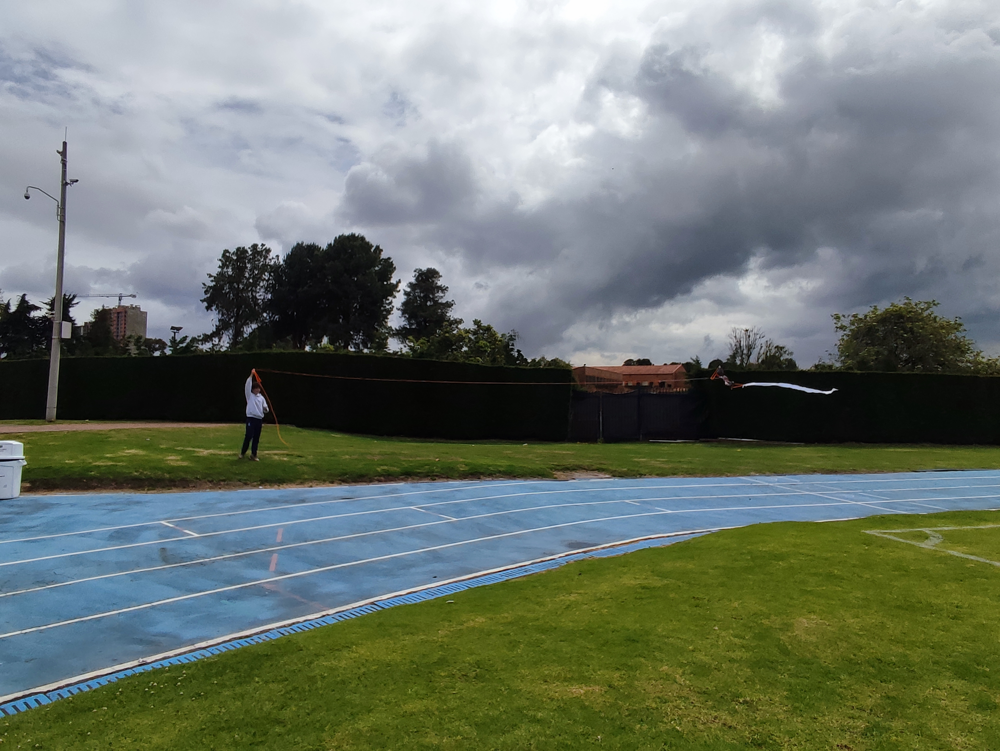

Áreas de CAS
- Creatividad: Tuve que ser creativo para diseñar la cometa con los materiales limitados que tenía.
- Actividad: Despúes de la creación de la cometa, tuve que correr afuera durante media hora para probar si servía.
- Servicio: No hubo elemento de servicio en esta experiencia CAS.
Etapas de CAS
- Investigación: Para crear nuestra cometa, tuvimos que investigar un poco, principalmente hablando con un profesor, para saber cómo crear una cometa adecuadamente.
- Preparación: Tuvimos que recolectar todos los materiales que necesitábamos para el proceso, como hilo y palos de madera.
- Acción: Después de la creación del producto, corrimos alrededor de media hora para hacer volar nuestra cometa.
- Demostración: Como mencione en el punto anterior, pasamos alrededor de media hora corriendo con la esperanza de que nuestra cometa funcionara.
- Reflexión: Al probar nuestra cometa, hubo algunos contratiempos, como que uno de los palos que usamos se rompió, y reflexionamos sobre cómo podríamos haber hecho un mejor trabajo para que la cometa fuera más duradera y efectiva.
Atributos del IB
- Indagadores: Tuvimos que indagar sobre el proceso de creación de una cometa.
- Instruidos: Tuvimos que usar conocimientos previos durante el proceso y para volar la cometa cuando ya estaba hecha.
- Pensadores: Tuvimos que demostrar pensamiento crítico para diseñar una cometa que volara adecuadamente a pesar de su falta de calidad.
- Comunicadores: Tuvimos que mostrar buenas habilidades comunicativas para realizar el proceso efectivamente, pues era un trabajo en grupo.
- Íntegros
- Mente abierta
- Solidarios
- Audaces
- Balanceados
- Reflexivos: Tuvimos que demostrar capacidad para reflexionar despúes de haber realizado la actividad, pues el vuelo de la cometa no fue un éxito total, y hubo varias cosas que pudimos haber mejorado.
Resultados de aprendizaje
- Identificar fortalezas y debilidades: Principalmente, soy bastante débil en manualidades.
- Enfrentar desafios: A pesar de mi debilidad en manualidades, afronte el reto positivamente y metí mi mejor esfuerzo para lograr la actividad propuesta.
- Iniciar y planificar: Durante el proceso de creación y luego uso de la cometa, mostre habilidades de organización y planificación adecuadas.
- Compromiso y perserverancia: A pesar de las dificultades que encontramos tanto en la creación como uso de la cometa, mi compañero y yo continuamos intentando hasta lograr que la cometa vuele.
- Trabajo en equipo y colaborativo: Tanto el proceso de creación como el uso de la cometa se basaba en colaboración, y siempre fue requerida buena comunicación y coordinación, tanto física como mental.
- Cuestiones de importancia global: Este proyecto nos ayuda a considerar las condiciones en las que viven millones de personas alrededor del mundo, y mostrar que, incluso con recursos limitados, es necesario solo tiempo y creatividad para lograr divertirse.
- Aspecto ético: El proyecto no tuvo muchas cuestiones éticas, aunque mi compañero y yo nos esforzamos para mantener el uso de materiales a un mínimo por preocupación por el medio ambiente.
Evidencias
